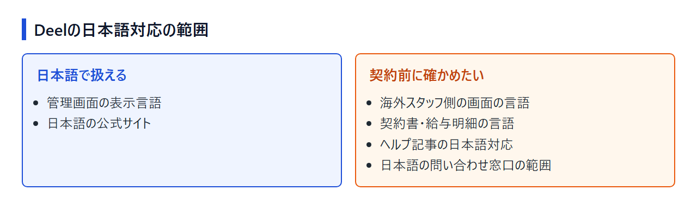
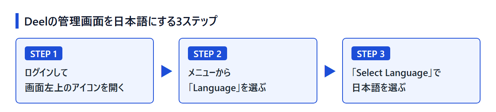

Deelは日本語で使える？日本語化の設定方法とサポート・支払いの対応範囲
海外のエンジニアとの業務委託契約や、海外スタッフへの給与の支払いをDeelにまとめたい。けれど管理画面や問い合わせが英語だけなら、社内の担当者で回せるかが気になります。結論からいうと、Deelは2025年1月に管理画面の日本語対応を始めており、表示言語を日本語に切り替えられます。
一方で、海外スタッフが見る画面や契約書・給与明細まで日本語になるかは、公式発表に書かれていません。ここではDeelで海外の人材と契約する側、つまり管理画面を使う担当者に向けて、設定手順と日本語で扱える範囲、日本からの支払い方法、Deel以外の候補を順に整理します。
料金ページは英語ですが、雇用形態ごとの月額を並べて見られ、無料デモの申し込みにも進めます。サービスの紹介だけなら、日本語の公式サイトでも読めます。
結論：Deelは管理画面を日本語にできる。サポートや書類は事前確認を
Deelの管理画面は、2025年1月から日本語に切り替えられます。 ただし、日本語サポートは「拡大予定」の段階にあり、従業員側の画面や契約書の言語は、公式発表では範囲が示されていません。
日本語で扱えること・契約前に確かめたいこと
公開されている公式情報から、日本語で扱えると分かるのは次の2つです。
- 管理画面の表示言語（言語設定で日本語を選ぶ）
- 日本語の公式サイト（サービス紹介とデモ予約の案内）
反対に、次の4つは公式情報だけでは判断できず、契約前に確かめる必要があります。
- 海外の従業員・業務委託者が見る画面の言語
- 契約書と給与明細の言語
- ヘルプ記事を日本語で読めるか
- 日本語で問い合わせできる窓口の範囲

Deelが向く人・代替も比べたい人
Deelが向いているのは、次のような人です。
- 管理画面が日本語で表示できれば、社内の担当者だけで運用を回せる
- 英語の契約書や案内メールは、担当者が読んで判断できる
- 毎月の支払いを日本円の銀行振込で済ませたい
日本語での運用を最優先するなら、この記事で取り上げる4社のうち、管理画面の日本語化を公式に確認できているのはDeelだけです。代替候補は言語よりも、次のような条件で比べることになります。
- 契約前に自分で画面を触ってみたい
- 海外の業務委託者の管理だけを、月額を抑えて行いたい
- EORの月額を抑えたい
- サービスの説明を日本語の公式サイトで読み比べたい
どれかに当てはまるなら、後半の代替候補とDeelを並べてみてください。
Deelの管理画面を日本語にする設定方法
ログイン後、画面左上のアイコンから「Language」→「Select Language」と進み、日本語を選びます。 日本語のほかにも、英語を含む13の言語を選べます。
左上のアイコンから「Language」を選ぶ手順
2025年1月のDeelの発表では、次の手順で表示言語を切り替えると案内されています。
- Deelにログインし、画面左上のアイコンを開く
- メニューから「Language」を選ぶ
- 「Select Language」の一覧から日本語を選ぶ

切り替える前はメニューが英語で表示されるので、「Language」の文字を目印に探してください。この設定が利用者ごとに反映されるのか、組織全体に反映されるのかは発表に書かれていません。複数の担当者で使うなら、それぞれのアカウントで表示を確かめておきましょう。
日本語のほかに選べる言語
発表の時点で選べる言語は、日本語を含めて次の14言語です。
- 日本語
- 英語
- スペイン語、ポルトガル語
- フランス語、イタリア語、ドイツ語
- オランダ語、オランダ語（ベルギー）
- ポーランド語
- ノルウェー語、スウェーデン語、デンマーク語、フィンランド語
欧州の言語が中心で、アジアの言語は日本語だけです。
日本語化されても確かめたい部分：海外スタッフ側の画面と書類
公式発表が案内しているのは管理画面の言語設定で、従業員・業務委託者側の画面や、契約書・給与明細が日本語になるかは明示されていません。 雇う相手が海外にいる以上、書類を英語や現地の言語で扱う場面も出てきます。
海外の従業員・業務委託者が見る画面
雇う側の担当者が日本語で操作できても、相手が見る画面の言語は別の問題です。相手が欧州にいれば、前の章の一覧に母語が入っている可能性はありますが、スタッフ側の画面で言語を切り替えられるかは公式発表からは読み取れません。
アジアの人材と契約する予定なら、相手の母語は一覧にない前提で、英語でのやり取りを基本に考えておくのが無難です。スタッフ側の画面の言語は、後で紹介するデモでの確認リストの②に入れています。
契約書・給与明細・税務書類の言語
契約書のテンプレート、給与明細、税務書類がどの言語で作られるかは、公開されている公式情報からは確認できません。
EORでは、Deelが現地で雇用主となり、雇用契約は現地の労働法に沿って作られます。管理画面が日本語でも、雇用契約書そのものは英語や現地の言語になると想定しておくほうが現実的でしょう。業務委託契約のほうは、Deelが用意するテンプレートが何語で作られるかが確認のポイントで、こちらは確認リストの③にまとめています。
英語のヘルプ記事を読むときの補い方
日本語化されたのは管理画面の表示です。支払い方法と対応通貨の一覧や、請求書の支払い手順を説明したDeelのヘルプ記事は、英語版で公開されています。次の章で紹介するカード手数料の料率や、振込で使える通貨の一次情報も、この英語の記事にあります。
ブラウザの翻訳機能で訳して読む場合は、手数料率や通貨コードの部分だけでも原文と見比べてください。機械翻訳で「3.9%＋$0.30」のような条件が崩れると、手数料の見積もりを誤ります。
日本語サポートと日本法人の状況
日本語の公式サイトはありますが、日本語対応のサポートチームは2025年1月の発表時点で「拡大予定」とされています。 日本法人や国内拠点についても、公式サイトには記載がありません。
日本語サポートは「拡大予定」の段階
Deelは2025年1月の日本語対応の発表で、日本語に対応したサポートチームを拡大する予定だと述べています。日本語の窓口がどの時間帯に、どんな問い合わせまで受け付けるのかは、発表の時点では示されていません。
比較サイトの中には「日本語サポート完備」と書いているものもありますが、公式の発表からはそこまで読み取れません。問い合わせまで日本語で完結させたいなら、確認リストの①で窓口の範囲を聞いておいてください。
日本語の公式サイトと日本での展開
Deelは2021年12月に日本へ進出し、日本語の公式サイトも用意しています。サービス紹介やデモ予約の案内は日本語で読めますが、公式サイトに日本法人や国内拠点の記載はなく、公式発表で触れているのも進出の時期だけです。
公式サイトが日本語だからといって、ログイン後の画面や契約後のやり取りまで日本語で完結するとは限りません。
無料デモで確認しておきたい5つのこと
Deelには無料プランがなく、営業担当者との無料デモが入口になります。ここまでで公式情報からは分からなかった点を、デモで聞いておきたいのは次の5つです。
- 日本語で問い合わせできる窓口と対応時間帯
- 従業員・業務委託者側の画面と、スマホアプリで選べる言語
- 雇用契約書・業務委託契約のテンプレートと給与明細の言語
- 日本円で振り込むときの振込先（国内の口座か海外の口座か）と、請求書に記載される内容
- 解約の手順と返金の扱い
面談そのものが日本語で進むかどうかも、サポート体制を知る手がかりになります。
日本からの支払い方法と請求書
カード払いはUSD建てで、日本発行のカードには3.9%＋$0.30の手数料がかかります。 銀行振込なら日本円で入金でき、Deel側の手数料は$5です。
カード払いはUSD建て、日本発行カードは手数料が高め
Deelのヘルプ記事によると、米国・英国・EU以外で発行されたカードで払う場合、決済はUSD建てになります。手数料も、米国・EU発行カードの2.9%ではなく3.9%＋$0.30が適用されます。USD建ての決済なので、これとは別にカード会社の海外利用手数料もかかります。
カードのブランドごとの可否は公式に書かれておらず、JCBが使えるかは分かりません。
銀行振込・Wiseなら日本円で入金できる
銀行振込は日本円を含む20以上の通貨に対応しており、Deel側の手数料は$5です。Wiseのアカウントを持っていれば、Wise経由の送金でも日本円で入金でき、手数料は$5相当になります。ほかにステーブルコインなどの方法も用意されています。
月額の大きいEORでは、カードと振込の手数料の差が広がります。たとえば月$599の支払いをカードで済ませると、Deel側の手数料は計算上約$23.66です。定額$5の振込と比べると、Deelに払う手数料だけで1人あたり毎月$18以上の差になります。
ただし、振込先が海外の口座になる場合は、日本の銀行側の送金手数料が別にかかり、この差は縮まります。振込先の口座がどこになるかは確認リストの④で聞いておくと、毎月の総額を見積もれます。
請求書の確認場所とインボイスの扱い
Deelからの請求書は、管理画面の「Finance」で一覧を確認し、そのまま支払えます。
日本の適格請求書（インボイス制度）の登録番号が記載されるかは、公開情報からは分かりません。海外サービスへの支払いは消費税の扱いが国内の取引と異なる場合があるため、経理上の処理は税理士に確認してください。
Deelの料金と始め方
無料プランはなく、無料デモから始めます。 料金は人数×月額のUSD建てで、長期契約は不要です。
主なプランの月額と円換算の目安
1ドル=157円換算（執筆時点の目安。為替で変動）で、海外の人材との契約に関わる主なプランの月額は次のとおりです。
- Contractors：$49/業務委託者（約7,700円）
- Contractor of Record：$325/人（約51,000円）
- EOR：$599/従業員（約94,000円）
海外の業務委託者と契約するだけならContractors、現地法人を持たずに海外の従業員を雇うならEORが中心です。ほかに、人材探しのFind Talent（$14/人）と、米国の従業員向けのUS PEO（$125/人）もあります。EORは1人あたりの月額が大きいので、前の章で見た支払い方法の違いが費用に響きます。
無料プランはなく、無料デモから始める
Deelに無料プランはなく、契約前の入口は営業担当者との無料デモです。デモの際に、日本語表示に切り替えた画面を見せてもらえるか頼んでおくと、契約後に担当者が使う画面を具体的に確かめられます。
月単位の料金で長期契約は不要
料金ページのFAQには、月単位の料金で長期契約は不要で、いつでも解約できると書かれています。ただし、EORで雇った従業員には現地の労働法が適用され、通知期間や退職金の義務がかかります。EORをやめるときに重いのは画面上の解約操作より、現地の法律に沿った雇用の終わらせ方のほうです。
解約の操作手順と返金の規定は公開情報からは確認できないため、確認リストの⑤に入れています。
英語の料金ページで雇用形態ごとの月額を見比べ、そのまま無料デモを申し込めます。
英語での運用が不安なら比べたい代替候補
英語での運用が不安でも、4社のうち管理画面の日本語化を公式に確認できているのはDeelだけです。 Oyster・Remoteは日本語で扱える範囲が公開情報で確認できず、Payoneer Workforce Managementも日本語を選べるのは公式サイトまでです。
そのため代替候補は、言語ではなく試せる範囲・料金・支払い方法で比べます。言語の不安を減らすなら、Oysterで契約前に英語の画面を触ってみるか、Payoneer Workforce Managementの日本語サイトでサービスの中身を読み比べる方法があります。
Oyster：画面の試用は無料、支払いは口座振替・振込のみ
Oysterは、アカウントの作成と画面の試用が無料です。契約前に自分で画面を開き、どの言語で表示されるか、英語の画面で運用を回せるかを確かめられる点が、デモから始めるDeelとの違いです。
業務委託者の管理（Global Contractors）は30日間無料で、その後は$29/業務委託者/月と、DeelのContractors（$49）より低い設定です。EORは$699/従業員/月で、開始時には返金可能な保証金を預ける必要があります。
支払いは口座振替と銀行振込で、カード払いの記載はありません。通貨はUSD・EUR・GBP・CADのいずれかで、日本円には対応していません。
EORと業務委託者管理の月額や、30日間の無料期間の条件は、料金ページで確認できます。
Remote：業務委託管理は使った人数分だけ課金
Remoteの業務委託者管理（Contractor Management）は$29/業務委託者/月で、使った人数分だけ課金されます。業務委託者の管理費を抑えたいなら、Oysterと並ぶ候補です。EORは$699/従業員/月で、人事の基本機能をまとめたHR Essentialsが含まれています。
支払いは銀行振込、口座振替（ACH＝USD、SEPA＝EUR、BACS＝GBP）、カードに対応しています。カード払いには手数料が加算され、自動支払いに設定できるのは口座振替だけです。日本円で払えるかは、料金ページとヘルプの記載からは読み取れません。請求書は管理画面の「Remote Invoices」で確認して支払います。無料プランの記載はなく、料金ページからはデモ予約へ進む流れです。
EOR・給与計算・業務委託者管理の料金を並べて見られ、表示通貨も切り替えられます。
Payoneer Workforce Management：公式サイトで日本語を選べる
Payoneer Workforce Managementは、公式サイトの言語選択に日本語を含む17以上の言語を用意しています。管理画面がどこまで日本語になるかは公開情報では分かりませんが、サービスの中身を日本語で読み比べたい人には手がかりになります。
料金はEORが$199〜/従業員/月で、この記事の4社の中でもっとも低い表示です。Agent of Recordは$99〜/業務委託者/月、Contractor Management Systemは$19〜/業務委託者/月で、いずれも「から」の表記です。送金は70以上の通貨に対応し、業務委託者は160以上、従業員は110以上の国・地域で使えます。無料プランや無料トライアルの記載はありません。
言語選択を日本語に切り替えてから、各プランの料金とサービス内容を確認できます。
Deelの日本語対応でよくある質問
スマホアプリも日本語になる？
公式発表で案内されているのは管理画面での言語設定で、スマホアプリが日本語で表示されるかは書かれていません。アプリを主に使う予定なら、確認リストの②と合わせてデモで表示を確かめてください。
JCBカードで支払える？
JCBが使えるかは公式に書かれていません。手元のカードがJCBだけなら、日本円の銀行振込を選べばカードのブランドを気にせずに払えます。
まとめ：管理画面は日本語で使える。サポートと書類はデモで確認を
Deelは管理画面を日本語に切り替えられ、銀行振込なら日本円での入金もできます。 日本語での問い合わせや書類の言語は公式情報で範囲が示されていないので、デモで確認リストの5点を聞いてから決めてください。
契約前の最終チェック
契約するかどうかは、次の5点で判断します。
- 担当者のアカウントで、管理画面を日本語に切り替えられるか
- 海外スタッフ側の画面と、契約書・給与明細の言語が運用に合うか
- 日本語での問い合わせがどこまでできるか
- 支払い方法と手数料（カードは3.9%＋$0.30、振込はDeel側で$5）を許容できるか
- いつでも解約できる条件と、EORで雇った従業員に現地の労働法が適用される点に納得できるか
Deelの言語面が合わなかった場合も、ほかの3社で日本語の管理画面は確認できていないため、英語の画面を前提に比べることになります。無料で画面を試せるOyster、業務委託者の管理が$29のRemote、EORが$199〜のPayoneer Workforce Managementを、料金と試せる範囲で並べてみてください。
英語の料金ページから無料デモを申し込めば、日本語で扱える範囲をその場で確かめられます。